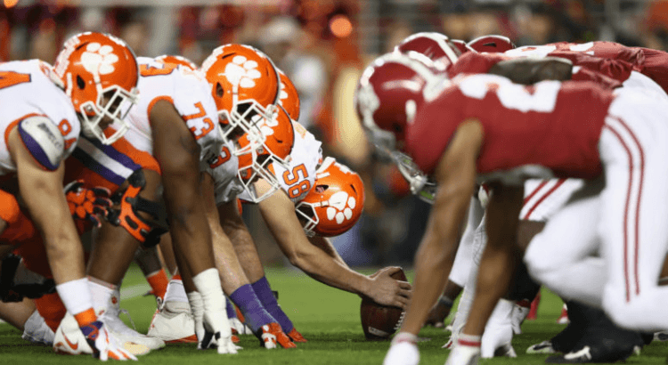
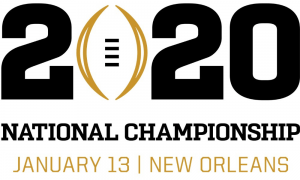
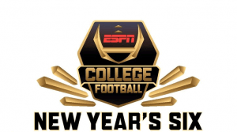

“Week 0” Kicks Off College Football; Alabama-Clemson (-155) Heavy Title Favorites
Congratulations, college football fans, you’ve almost made it.The 150th season of NCAA football kicks off with a two-game appetizer Saturday.In the main event, the 8th-ranked Florida Gators (-7.5) meet their hated rivals from Miami at Camping World Stadium in Orlando.Later that night, the Arizona Wildcats (-11.0) travel to Hawaii to take on the Warriors.
The Gators’ and Hurricanes’ 'Week 0' clash is just one of many high-profile games during the season’s first two opening weeks.Defending national champion, and #1-ranked Clemson (-35.5), plays a week from Thursday, as sophomore sensation Trevor Lawrence takes on traditional rival Georgia Tech.ESPN’s College GameDay will be in Arlington, TX next Saturday, as the #16 Auburn Tigers (-3.0) face the #11 Oregon Ducks at Jerry World.For the biggest line of the week, look no further than the UCF Knights (-45.5), as they play a somewhat-controversial mismatch against Florida A

While the passion and tradition of college football is likely to be as good as it ever was, this year looks surprisingly short on drama.It’s Clemson and Alabama’s world.The rest of us are just living in it.The Tigers and Tide have met three times for the national title in the playoff era, and four years in a row.It’s no surprise, then, that the two superpowers are favored to meet again this year.In fact, the Alabama-Clemson pair (-155) are heavy favorites over the field (+130) to meet January 13 in New Orleans.SEC rivals Georgia (+120) and Ohio State (+210) seem to have the best preseason odds of becoming cannon fodder for Alabama (-330) and Clemson (-550) in the semifinals on December 28.
Clemson (-300) and Alabama (-150) are, of course, also favored to win their respective conferences this year.Oklahoma (-125) are a similar overwhelming favorite in the Big 12 race.While the media seems to be rooting for Jim Harbaugh to finally get Michigan (+250) over the hump, and beat the arch-rival Buckeyes, the bettors love two-time defending champ Ohio State (+110) in the Big Ten.There seems to be no clear favorite in the PAC-12 among the punters, but on Media Day, the pollsters picked Utah (+250) over Oregon (+300) and Washington (+300).UCF (+110) stands the best chance of winning the American Athletic Conference, and returning to the New Year’s Six as the top-rated 'Group of 5' winner for the third straight season.
The way we watch the game is also changing this year, with the ACC becoming the fourth Power 5 conference to launch its own network Thursday (the Big 12 remains the lone holdout).Many providers, however, have yet to sign on to the new ACC Network, including Comcast (with an estimated 21 million subscribers) and Dish (10 million).As anyone in PAC-12 country will tell you, the carriage wars have become just another fact of life for college football fans.Speaking of the PAC-12, the conference decided Wednesday not to move forward with 9 AM Pacific kickoffs this season, but may revisit the issue in the future.Fans have long complained of late night kickoffs limiting exposure to markets (and committee members) back east.
[bsa_pro_ad_space id=4]
Posted On: 2019-08-22T00:00:00
Posted By: Brendan Monaghan (CN Staff)





Content Date: 2019-08-22
Download Date: 2021-07-09
Document ID: L0C04E14G